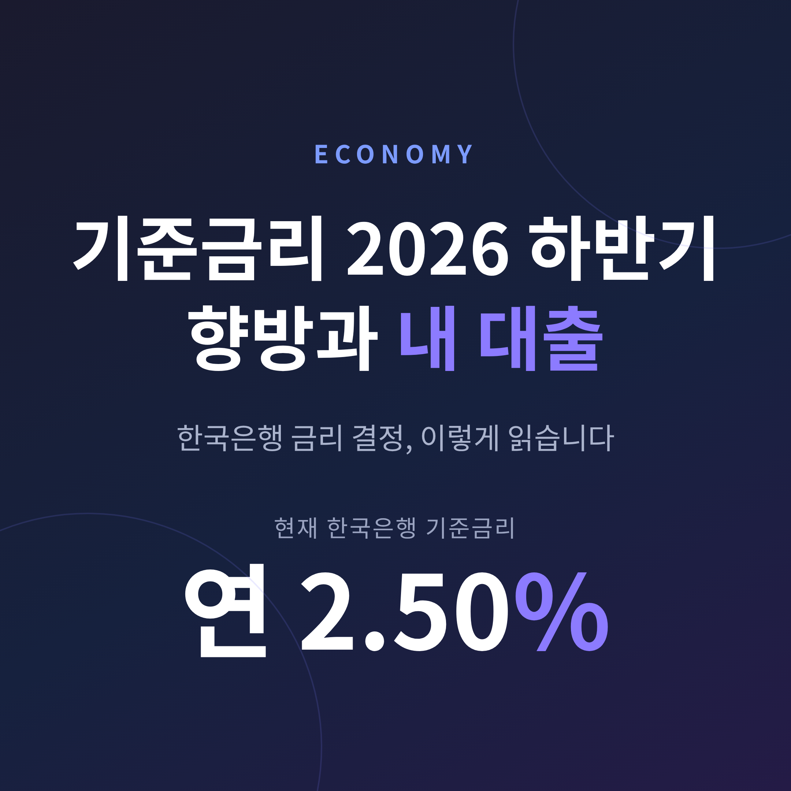
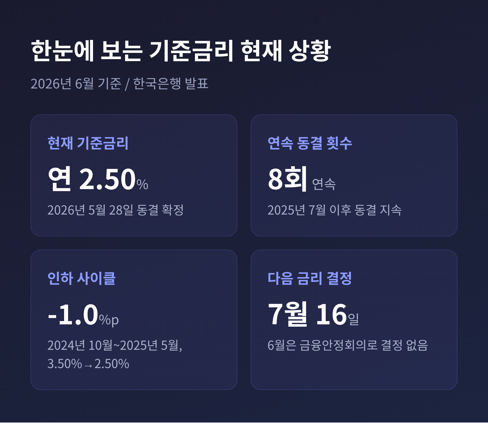
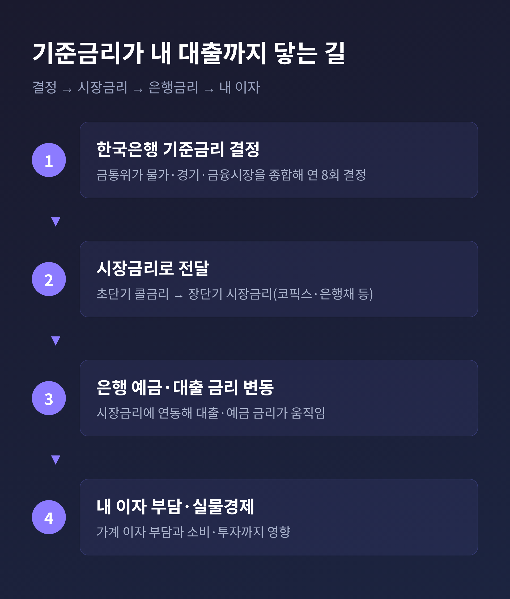
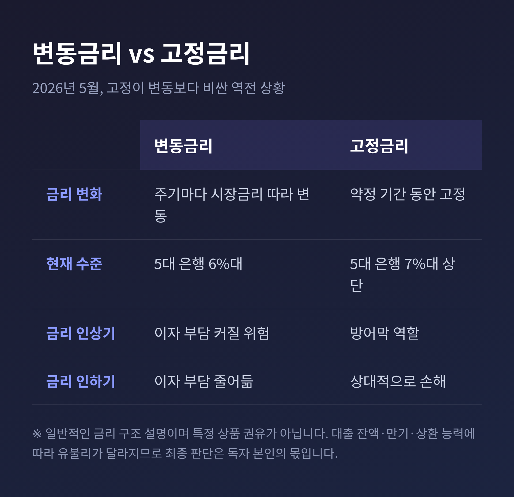

먼저 핵심부터 정리하겠습니다. 2026년 6월 현재 한국은행 기준금리는 연 2.50%입니다. 5월 금통위는 여덟 번째 연속 동결을 택했지만, 그 속내는 인상 쪽으로 기운 ‘매파적 동결’이었습니다. 오늘은 이 결정을 어떻게 읽고, 내 대출에 어떻게 비춰봐야 하는지를 차분히 짚어보려 합니다.
숫자부터 보겠습니다. 2026년 6월 11일 현재 한국은행 기준금리는 연 2.50%입니다.
이 수치는 5월 28일 금융통화위원회가 동결로 확정한 값입니다. 지난해 7월부터 올해 5월까지, 무려 여덟 차례 연속 동결입니다.
흐름을 짚으면 이렇습니다. 한국은행은 2024년 10월부터 2025년 5월까지 기준금리를 총 1.0%포인트 내렸습니다. 3.50%에서 2.50%로 내려온 셈입니다. 그리고 2025년 5월 이후로는 줄곧 2.50%에 멈춰 있습니다.
참고로 6월에는 금리를 정하지 않습니다. 6월은 통화정책방향 회의가 아니라 금융안정회의가 열리는 달입니다. 다음 금리 결정은 7월 16일로 예정돼 있습니다.

표면만 보면 변한 게 없습니다. 8회 연속 동결이니까요.
그런데 결정문 안을 들여다보면 온도가 다릅니다. 5월 금통위는 같은 동결이라도 결이 사뭇 매파적이었습니다.
근거는 네 가지입니다.
첫째, 소수의견입니다. 위원 일곱 명 중 두 명(장용성·유상대 위원)이 기준금리를 2.75%로 올리자는 의견을 냈습니다. 동결 안에서도 인상을 주장한 목소리가 둘이나 나온 것입니다.
둘째, 점도표입니다. 위원들이 보는 6개월 뒤 금리 전망 21개 점 가운데 19개가 지금(2.50%)보다 높은 곳에 찍혔습니다.
셋째, 경제 전망 상향입니다. 한은은 올해 성장률 전망을 2.6%로, 소비자물가 상승률 전망을 2.7%로 올렸습니다. 물가 전망은 2월(2.2%)보다 0.5%포인트 높아진 수치입니다.
넷째, 총재의 발언입니다. 신현송 한은 총재는 “물가·환율·부동산을 보면 갈 길이 명확하다”며 적절한 시기에 인상하겠다는 뜻을 내비쳤습니다.
예전 동결은 “당분간 지켜보자”는 신호였습니다. 이번 동결은 “곧 올릴 수도 있다”는 신호에 가깝습니다. 시장에서 인상 시점을 7월로 점치는 이유입니다.
여기서 잠깐, 금리가 정해지는 원리를 짚고 가겠습니다. 결정을 ‘읽으려면’ 구조를 알아야 하기 때문입니다.
한국은행은 물가안정목표제라는 틀로 움직입니다. 소비자물가 상승률을 연 2.0%에 맞추는 것을 목표로 삼고, 거기에 통화정책을 맞춥니다.
금융통화위원회는 1년에 여덟 번 모여 물가·경기·금융시장을 종합해 기준금리를 정합니다.
정해진 기준금리는 곧장 은행 간 시장의 초단기금리에 닿습니다. 그다음 장단기 시장금리로, 다시 은행의 예금·대출 금리로 번집니다. 마지막에 우리 가계의 이자 부담과 실물경제까지 옮겨갑니다.
그래서 결정문을 읽을 때는 동결이냐 인상이냐는 결과만 보지 마시길 권합니다. 소수의견 수, 점도표 분포, 전망 수정 방향, 총재의 말투 — 이 네 가지가 다음 수의 예고편입니다.

이제 본론입니다. 하반기 인상 가능성이 거론되는 지금, 변동금리와 고정금리를 어떻게 봐야 할까요.
먼저 시장 상황을 보겠습니다. 2026년 5월 기준 5대 시중은행의 5년 고정형 주택담보대출 금리 상단은 다시 연 7%대를 넘어섰습니다. 반면 변동형은 6%대였습니다. 고정금리가 변동금리보다 높은 역전 현상이 이어지고 있는 것입니다.
그래서일까요. 사람들은 변동금리로 몰렸습니다. 2026년 3월 신규 주택담보대출 중 변동금리 비중은 39.2%였습니다. 1년 전(11.8%)과 견주면 세 배가 넘습니다.
여기서 두 성격을 짧게 정리하겠습니다.
변동금리는 시장금리에 따라 일정 주기마다 금리가 바뀝니다. 당장은 이자가 낮지만, 금리가 오르면 부담이 함께 커집니다.
고정금리는 약정 기간 동안 금리가 묶입니다. 지금은 변동보다 비싸지만, 인상기에는 방어막이 됩니다.

판단의 갈림길은 분명합니다. “지금 낮은 변동금리의 이점”과 “앞으로 오를 위험”을 같은 저울에 올려놓아야 한다는 것입니다.
다만 솔직히 말씀드리면, 정답은 하나로 떨어지지 않습니다. 대출 잔액, 남은 만기, 상환 능력, 금리 전망을 보는 시각이 사람마다 다르기 때문입니다. 그래서 이 글도 어느 쪽이 옳다고 단정하지 않습니다.
한 가지 더 짚을 것이 있습니다. 금리 이야기의 밑바탕에는 늘 가계부채가 깔려 있습니다.
금융당국은 2026년 가계대출 증가율 목표를 1.5% 수준으로 제시했습니다. 지난해 1.7%보다 조인 수치입니다. 주택담보대출에는 별도 관리 목표까지 새로 두었습니다.
가계부채가 무거우면 한국은행도 마음 편히 금리를 올리기 어렵습니다. 이자 부담이 가계를 짓누르기 때문입니다. 반대로 부채가 더 불어나는 것도 막아야 합니다.
결국 기준금리는 물가와 가계부채 사이에서 줄을 타는 결정입니다. 그 줄타기의 방향을 읽는 일이, 내 대출을 지키는 첫걸음인 셈입니다.
정리하면 이렇습니다. 2026년 6월 기준금리는 2.50%, 8회 연속 동결입니다. 그러나 소수의견·점도표·전망 상향·총재 발언은 하반기 인상 쪽을 가리키고 있습니다.
다음 금통위가 어떤 결정을 내리든, 그 안의 신호를 먼저 읽는 분이라면 내 대출의 방향도 한 발 앞서 가늠하실 수 있을 것입니다.
다시 한번 덧붙입니다. 이 글은 일반 정보이며, 대출이나 투자에 관한 권유가 아닙니다. 구체적인 선택은 본인의 상황을 가장 잘 아는 독자께서 직접 내리시길 바랍니다.